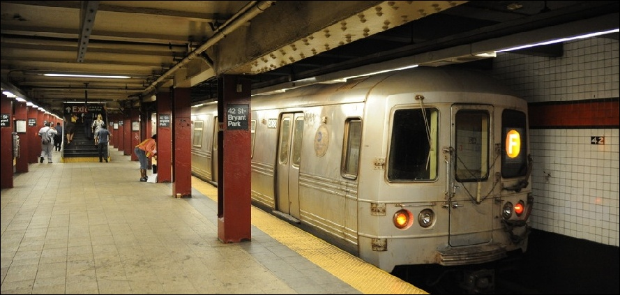

I'm not going to go into the politics of being late like done on Forbes, Vitamin Talent, The Wall Street Journal, and many more publications. But rather I wanted to propose a theory I've been thinking about. It's not really a theory, and it's also not original (I'm assuming there's stuff about this out there somewhere, maybe phrased differently. And if you do know an actual theory that explains this like I have, please let me know! Maybe this has derivatives in Chaos Theory/Butterfly Effect?). But it's this concept that when you are late, you're usually more late. This doesn't mean it's impossible to be one minute late, but if my made-up data is correct, I think the distribution of lateness is probably a negative skewed normal curve.
I'm not going to go into the politics of being late like done on Forbes, Vitamin Talent, The Wall Street Journal, and many more publications. But rather I wanted to propose a theory I've been thinking about. It's not really a theory, and it's also not original (I'm assuming there's stuff about this out there somewhere, maybe phrased differently. And if you do know an actual theory that explains this like I have, please let me know! Maybe this has derivatives in Chaos Theory/Butterfly Effect?). But it's this concept that when you are late, you're usually more late. This doesn't mean it's impossible to be one minute late, but if my made-up data is correct, I think the distribution of lateness is probably a negative skewed normal curve.
Again, I don't have ANY data to back this up right now, I'm just speaking from completely unfounded, anecdotal theories that I've only thought about, but I think it could be the case.
Why?
So why do I think this? Well I guess I should give a little background. Ethnically I am Korean (this is probably not limited to Koreans), and there is something in the Korean community that often gets referred to as "Korean Time", which is not the current time in our motherland, but rather the idea that Koreans are often late. So when you schedule an event, you have to take into consideration that people will be inevitably late. So in this theory, I'm not talking about people who are too cool for school and purposely late, but rather people that more or less wnat to be on time but end up being very late.
The Theory
I think that when you start drifting into late territory, the world becomes to conspire against you. Okay maybe not, but that's what it often feels like!
So let me give an example.
Late Subway Trains
 It might be hard to believe, but subway trains have a schedule. Let's say in the afternoon, trains leave Van Cortlandt Station (first stop on the 1-line) every 6 minutes because that is the optimal interval for that time. Well one train leaves 1 minute late. Because it leaves 1 minute late, the people at the stops are waiting 1 more minute, which means that more people will make it onto that train. This means that the train is more crowded and it takes longer for people to get on and for the doors to close. This means that slowly, it gets later and later. So where as it might have started off 1 min late, by the time it hits grand central, it's even later!
Late People
I am late for work one day. I wake up 5 min late, and so I'm rushing. Because I'm rushing I forget my cell phone at home and have to come back home to get it, making me even later. Or maybe because I'm late, I'm now in rushhour for 10 more minutes!
This is just a small sample of possible reasons why this can happen. I think that the later you are, the more factors that exist that can make you later! All goes to say, when we're late, we're really late.
Further Research
I would love to do some data about this in the future and see if there's any truth to this theory!